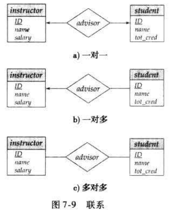

数据库｜E-R 模型
数据库设计和 E-R 模型
设计阶段
- 数据库设计的不同阶段：
- （1）最初需求分析阶段：完整刻画用户的的数据管理需求，交付物是用户需求说明书，可以用图示的方法；
- （2）概念设计(conceptual-design)阶段：设计者选择数据模型，并根据所选择的概念模型的概念将需求转化为数据库的概念模式
- 比如我们本章采用的E-R模型，用
实体（Entity）和联系（Relationship）的术语来表达数据以及数据和数据之间的关系，还有约束等信息。
- 比如我们本章采用的E-R模型，用
- （3）模式精化阶段：最终数据库要落地实现，这个阶段将E-R模型转换为关系模式（一些关系表的定义），并检查关系模式是否存在冗余以及修改异常等问题
- （4）物理设计和调优：关注查询效率以及系统负载，进一步精化数据库模式设计，比如文件组织形式、索引结构与定义等
E-R 模型
- 数据库可以被建模为：
- 实体的集合
- 实体之间的关系
实体与联系
- 实体(Entity) ：是现实世界课区别于所有其它对象的事物或对象
- 例如特定的人、计算机、公司、教师、单车、病人等
- 每个实体有一组性质，其中一些性质的值可以 唯一地标识 一个实体
- 实体集合：是具有相同类型，即相同性质的实体的结合
- 实体和对象(objects)的区别：实体是静态的，和对象不同，没有针对实体的操作（method），只有属性描述
- 联系(relation) 联系指多个实体之间的关联
- 例如：学生和教师之间的关系是指导和被指导的关系，（advisor），捐赠方和红十字会之间是捐赠和接受捐赠的关系（donation）
- 联系集：相同类型联系的集合
- 规范地表达：联系集是 n≥2 个实体集上的数学关系
- 联系也可以具有 描述性属性(descriptive attribute)
- 例如教师指导学生需要记录指导时间，比如大家毕业论文时需要填写指导教师每次指导同学的时间，这个时间属性就是联系的属性
- 联系的度(Degree of a Relationship Set): 表达了参与联系的实体集的数目
- 二元联系集的度为2
- 涉及两个实体集
- 数据库系统中的大多数关系集都是二元的
- 大多数联系时二元联系，有一些情况采用多元联系建模时更简洁
- 二元联系集的度为2
属性(Attributes)
- 实体由属性集合来表达，来刻画，是实体集合中所有成员都具备的特征
- 例如教师有ID和姓名，捐赠方有捐赠者名字，捐赠物品和数量等
- 值域(Domain) 表达是每一个属性允许取值的范围
- E-R 模型中的属性可以按照如下的属性类型来进行划分：
- 简单(simple)和复合(composite)属性
- 简单属性不能划分为更小的部分
- 复合属性可以划分为更小的部分（即其他属性）
- 如属性 name 可以设计为一个包括 first_name, middle_initial, last_name
- 单值(single-valued)和多值(multivalued)属性
- 对某个特定实体而言，一个属性可能对应于一组值
- 例如：对于某个人，他可以有多个不同数量的电话，这样的属性称作是多值的
- 对于多值属性，用花括号将其括住，如 {phone_number}
- 对某个特定实体而言，一个属性可能对应于一组值
- 派生(derived)属性
- 这类属性的值可以从别的相关属性或实体派生出来
- 例如年龄属性可以由出生日期推导出来
- 这类属性的值可以从别的相关属性或实体派生出来
- 简单(simple)和复合(composite)属性
约束
- E-R 模型可以定义数据库中数据必须满足的约束：联系映射基数约束、参与约束、Key约束
映射基数(mapping cardinality)
- 映射基数，表示一个实体通过一个联系集能关联的实体的个数
- 映射基数在描述二元联系集时非常有用
- 对于实体集 A 和 B 之间的二元联系集 R 来说，映射基数必然是以下情况之一：
- 1:1 (one to one)
- 1:N (one to many)
- N:1 (many to one)
- N:M (many to many)
参与约束(Participation Constraints)
- 参与约束是指实体集合中的实体参与联系时是否全体参与还是部分参与
- 如果实体集 E 中的每个实体都参与到联系集 R 的至少一个联系中，实体集 E 在联系集 R 中的参与称为 全部(total) 的
- 如果 E 中只有部分实体参与到 R 的联系中，实体集 E 到联系集 R 的参与称为 部分(partial) 的
在上图 a 中，B 在联系集中的参与是全部的，而 A 在联系集中的参与是部分的
在上图 b 中，A 和 B 在联系集中的参与都是全部的
码
-
实体集合中的每一个实体应该能区分，是不同的实体，通过属性的值来表明唯一性。
- E-R模型提供了Key的概念，与关系模型的Key概念一致。
-
Super key：实体集合的super key 指足以区分实体集合中不同实体的属性，同样，联系集合中的联系也要有相应的机制来区分每一个联系
- Candidate key 是
最小的 super key - 选择一个 candidate key 作为 primary key
- Candidate key 是
-
联系集合中的联系同样需要区分， 联系的 primary key 由参与联系的实体的 primary key 组合而成 ，依赖于联系集的映射基数
- 在确定什么是 candidate key 时，必须考虑关系集的映射基数
- 在选择 primary key 时需要考虑关系集的语义，以防出现多个 candidate key
实体-联系图(E-R diagram)
- E-R图是以图形化方式表示数据库的全局逻辑结构，E-R图有明确的符号定义规范和语义说明规范，不可随意乱画
基本结构
- E-R 图包括如下几个主要构件
- 分成两部分的矩形 代表实体集
- 第一部分包括实体集的名字，第二部分包括实体集中所有属性的名字
- 菱形 代表联系集
- 未分割的矩形 代表联系集的属性
- 构成主码的属性用下划线标明
- 线段 将实体集连接到联系集
- 虚线 将联系集属性连接到联系集
- 双线 显示实体在联系集中的参与度
- 双菱形 代表连接到弱实体集的标志性联系集
- 分成两部分的矩形 代表实体集
- 绘图工具
- ERwin
- Rational Rose
- Microsoft Visio
- Lucidchart
- SmartDraw
映射基数
- E-R图中基数约束的表达：箭头( )和不带箭头的横线(——)
- 箭头所指实体集表示映射的“1”一方
- 线段对应的实体集表示映射的“多”一方

-
全参与与部分参与的表达：如果是全参与，连线用双线；如果是部分参与，连线用单线
- 全参与：实体集中的每个实体都参与关系集中的至少一个关系
- 部分参与：某些实体可能不参与关系集中的任何关系
-
E-R 图还提供了一种描述每个实体参与联系集中的联系的次数的更复杂的约束的方法
- 实体集和二元联系集之间的一条边可以有一个关联的最大和最小的映射基数，表示为 L…h
- L 表示最小的映射基数
- h 表示最大的映射基数
- 最小值为 1 表示这个实体集在该联系集中全参与
- 最大值为 * 表示没有限制
- 实体集和二元联系集之间的一条边可以有一个关联的最大和最小的映射基数，表示为 L…h
每个学生必须有且仅有一个导师
教师可以有零个或多个学生
复杂的属性
复合属性使用不同的缩进来标识
图中还给出了由 {phone_number} 表示的多值属性 phone_number 和一个由 age() 表示的派生属性 age
非二元的联系集
- 最多允许三元（或更大程度）关系中的一个箭头表示基数约束
- 如果有多个箭头，则有两种方法可以定义含义。
- 例如，A、B 和 C 之间的三元关系 R 与箭头指向 B 和 C 可能意味着
- 每个 A 实体都与 B 和 C 中的唯一实体相关联
- 来自 （A， B） 的每对实体都与一个唯一的 C 实体相关联，并且每对 （A、C） 都与一个唯一的 B 相关联
- 为了避免混淆，禁止使用多个箭头
- 例如，A、B 和 C 之间的三元关系 R 与箭头指向 B 和 C 可能意味着

-
可以看到，这个E-R图上有6个实体，4个联系
- 一个部门可以承担多个项目，部门有 name 作为 key，项目有 budget、projID、category 等属性
- 员工在某个部门工作，员工有 name、EID和address 等属性，参与某个项目
- 员工分合同工和小时工，合同工有 ContractId 属性，小时工有 Hr_wage 和 Hr_work 属性
- 注意黄色三角 isa 表示， 合同工和小时工同样有员工的属性
-
双线矩形表示的实体Dependent：称作弱实体，这类实体的存在依赖于一个实体
- 例如Dependent依赖于employee
- 例如一个单位福利很好，记录员工的亲属的信息，逢年过节表示慰问等。当某个员工离职，相应的Dependent也就不存在了
- Dependent有自己的属性和区分符
- 例如Dependent依赖于employee
弱实体集
- 没有足够属性以形成主码的实体集称为 弱实体集(weak entity set) , 有主码的实体集称为强实体集
- 但是弱实体集有区分符，若要唯一区分弱实体，需要其依赖的强实体的key + 弱实体的分辨符
- 从实际意义上来讲，弱实体集的存在依赖于一个实际存在的、确定的实体集（称作强实体集）
- 弱实体集存在依赖于标识实体集
- 弱实体集的分辨符也称为该实体集的部分码
- 弱实体集的主码是由标识实体集的主码加上弱实体集的分辨符构成的
- 在 E-R 图，弱实体集和强实体集类似，用矩形标识，但是有区别
- 弱实体集的分辨符用 虚下划线 标明
- 关联弱实体集和标识性强实体集的联系集用 双菱形 表示
- 联系是双线，弱实体一方的连线是双线
- 注意：强实体集的主键 不显式 存储在弱实体集中，因为它隐式存在于标识关系中
- 如果显式存储 course_id，则可以将部分设置为强实体，但随后部分和课程之间的关系将被课程和部分共有的属性定义的隐式关系 course_id 复制
转换为关系模式
- 可以将一个符合 E-R 数据库模式的数据库表示为一些关系模式的集合
- 在数据库设计中，对于每个实体集以及对于每个联系集，都有唯一的关系模式与之对应，关系模式名即为相应的实体集或联系集的名称
具有简单属性的实体集的表示
- 强实体转换为一个关系模式，关系名即实体名，如student、course，属性即实体属性，key采用实体的key
- 弱实体没有 key 但是有分辨符，依赖于一个强实体
- 例如 section，转换为一个关系，关系名即弱实体名，属性除了自己的属性外，加一个所依赖的强实体的key，最终弱实体转换的关系的 key 为 强实体的 key + 分辨符 组成
复杂属性和多值属性
-
通过为每个子属性创建一个单独的属性来处理复合属性，即不为复合属性本身创建一个单独的属性
- 如关系模式中 name，没有单独的属性或模式表示 name, 而是将组合属性的每一个部分作为关系模式的一个属性，如 first_name, middle_name 和 last_name
-
多值属性的处理不同于其他属性， 通常建立一个新的关系模式
- 如捐赠品实体集，其中属性“捐赠品种类”是一个多值属性，这时可以另外建一张表，捐赠品种类表，这个表的属性包括捐赠品种类，以及捐赠品ID
- 一般性地，对于多值属性 M，构建一个关系模式 R，包含对应 M 的属性 A，以及对应 M 所在实体集/联系集的主码
-
在多值属性构建的关系模式上建立外码约束，由实体集的 主码 生成的属性去参照实体集生成的关系
- 在一个实体集只有两个属性（一个主码 B 以及一个多值属性 M）的情况下，该实体集的关系模式只包含一个属性，即主码属性 B
- 可以删掉这个关系，同时保留具有属性 B 和对应 M 的属性 A 的关系模式，即不创建与实体对应的关系，只需创建与多值属性对应的关系
考虑上图实体集，其中 time_slot_id 是实体集 time_slot 的主码，有一个多值属性，而且恰好是复合属性，这个实体集可以按照
表示联系集
- 如果联系是 N:M 映射，那么联系转换为一个关系，关系名为联系名，属性为关联的两个实体的 key + 联系的属性
advisor联系是N:M映射，转换为关系advisor = (s_id, i_id)，如果advisor有自己的属性，比如advise_date ,那么转换的关系为advisor = (s_id, i_id, advise_date)
- 对于一对多或多对一的映射，不需要转为一个关系，只需将“1”方的实体的key加入到“N”方实体对应的关系属性中，外键约束
- 或者“多”方实体集的主码构成主码
- 对于一对一映射，不用转换为一个关系，只需在一个实体中加入外键
- 或任意一个实体集的主码都可以选做主码
E-R 设计问题
实体集 or 属性
例如在 instructor 实体集中增加 phone_number 属性，电话可以是一个单独的实体，可以有运营商、location（office/home）、号码等属性
这时设计改为实体集 phone 和实体集 instructor 以及联系inst_phone，如上图示意
- 两种设计方法的差异：
- 当查询需求需要电话的类型、位置等信息时，考虑单独一个电话实体，如果查询需求没有关于电话的基本信息查询，则不必单独一个实体集
实体集 or 联系集
例如在表示学生与课程之间的关系时，之前用了 takes 这个关系表来记录
如果另一种思考方法：registration 实体代表课程-注册记录，与一个学生一次开课关联，如图示意，且 registration 实体全参与两个联系 section_reg 和 student_reg
takes更紧凑，可取
- 当描述实体间的行为时采用联系集
二元联系 or 多元联系
-
数据库中的联系通常是二元联系，一些非二元联系可以用二元联系来表达，可以转换
- 以三元联系为例，通过引入实体 E 将三元联系转为二元联系
-
某些看似非二元的关系可能使用二元关系更好地表示，但有些关系自然是非二元的。
- 如之前的 proj_guide
- 将非二元关系转换为二元关系
- 通常，任何非二元关系都可以通过创建人工实体集来使用二元关系来表示。
- 将实体集 A、B 和 C 之间的 R 替换为实体集 E 和三个关系集：
- RA 联系 E 和 A
- RB 联系 E 和 B
- RC 联系 E 和 C
- 为 E 创建特殊标识属性
- 将 R 的属性添加到 E
扩展的 E-R 特性
- 基本的E-R概念已足以对大多数数据库进行建模，但数据库的有些方面可以通过对基本 E-R 模型组一些扩展来更恰当地表达
- 特化、概化、高层和低层实体、属性继承和聚集
特化(Specialization)
- 实体集可能包含一些子集，子集中的实体在某些方面区别于实体集中的其他实体
- 例如前面的例子 employee 包含小时工和合同工，person 包含 instructor 和 student 等
- 即实体集中的某个实体子集可能具有不被该实体集中所有实体所共享的一些属性
- 特化就是 在实体集内部进行分组的过程
- 分析时采用自顶向下的分析过程，从初始实体集到一系列不同层次的实体子集的细化
- 这些子分组将成为较低级别的实体集，这些实体集具有不适用于较高级别实体集的属性或参与的关系
- 由 E-R 图中标记为
ISA 的三角形组件描绘 - 属性继承 ：较低级别的实体集继承它所链接到的较高级别实体集的所有属性和关系参与。
概化(Generalization)
- 设计过程也可以自底向上进行，多个实体集根据共同具有的特征综合成一个较高层的实体集
- 高层实体与低层实体集也称为超类和子类
- ISA 关系也称为超类-子类关系
聚集(Aggregation)
- E-R模型不能表达联系之间的联系，但有时建模时需要表达联系之间的联系
- 例如教材的例子：需要评估教师指导学生完成项目的情况
- Evaluation表示评估报告实体集，讲义上的模型用四元联系eval_for表达
- 但并不清晰。可以采用聚集这种抽象方法来表达
- 例如教材的例子：需要评估教师指导学生完成项目的情况
- eval_for 和 proj_guide 的关系集表示重叠的信息
- 每个 eval_for 关系都对应于一个 proj_guide 关系
- 但是，某些 proj_guide 关系可能与任何 eval_for 关系都不对应
- 所以不能抛弃 proj_guide 关系
- 通过聚合消除这种冗余
- 关系视为抽象实体
- 允许关系之间的关系
- 将关系抽象为新实体
转换为关系模式
-
概化的表示：
- 构建一个高层实体对应的关系模式
- 为每一个低层实体构建关系模式，包括高层实体的 primary key 和本地属性
- 如person，student和instructor
- 缺陷：访问一个记录的信息时需要访问两个表
-
聚集的表示：
- 构建一个关系模式，包含聚集联系的 primary key、关联的实体集的 primary key 以及任意描述的属性
- 缺陷：属性冗余
设计原则
- 忠于需求规格说明
- 避免冗余（规范化设计）
- 保持简单，避免不必要的实体/联系
- 选择正确的要素：名词表达的对象常常用作实体
ER 模型转换关系模式步骤
- 为每个实体创建表;包括单值属性。选择主码。
- 为每个弱实体类型创建表;包括单值属性。在弱实体中将 owner 的主码作为外键包括在内。将码设置为所有者的外键加上本地部分主码
- 对于每个 1：1 关系，向关系中涉及的实体之一添加一个外键（向关系中的另一个实体添加外键）
- 对于每个 1：N 关系，向关系 N 端的实体添加一个外键（以引用关系 1 端的实体）。
- 对于每个 M：N 关系，创建一个新表。在关系中为每个参与者实体包括一个外键。新表的键是所有此类外键的集合。
- 对于每个多值属性，构造一个单独的表。重复此新表中实体的键。它既可用作此表的键，也可用作实体的原始表的外键。
本博客所有文章除特别声明外，均采用 CC BY-SA 4.0 协议 ，转载请注明出处！